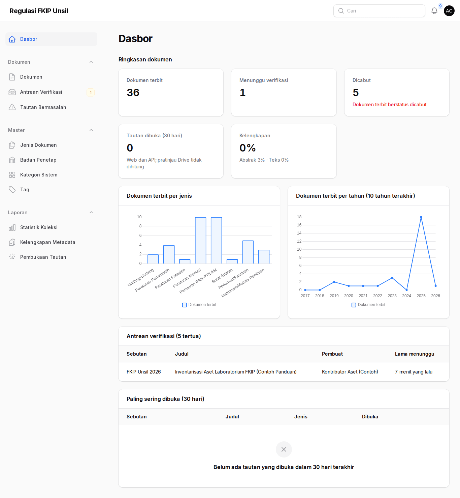
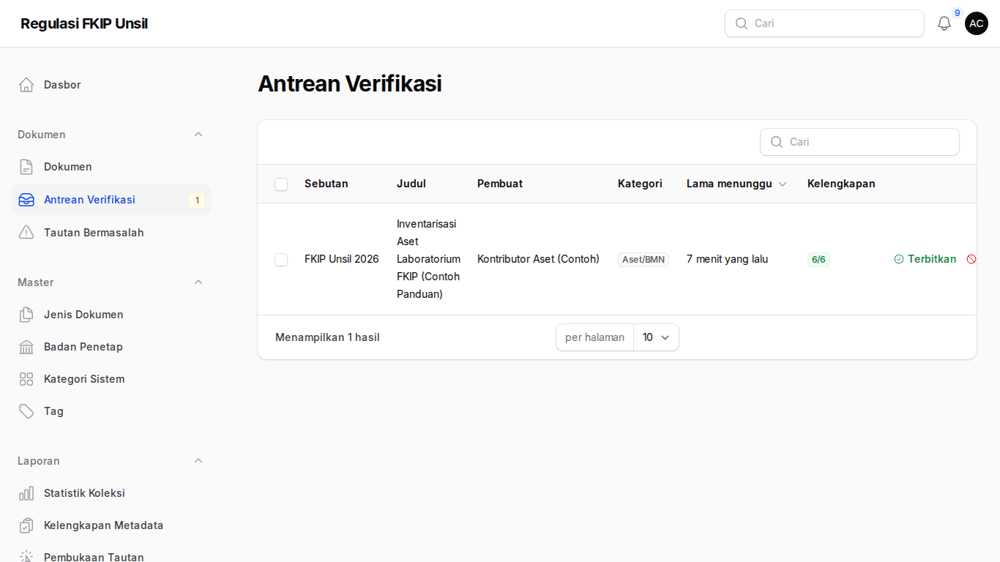
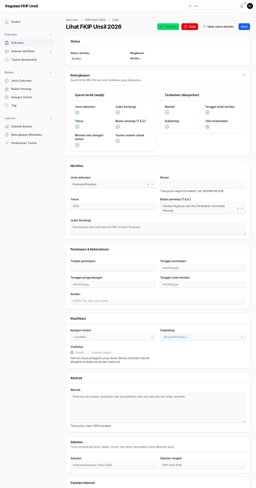
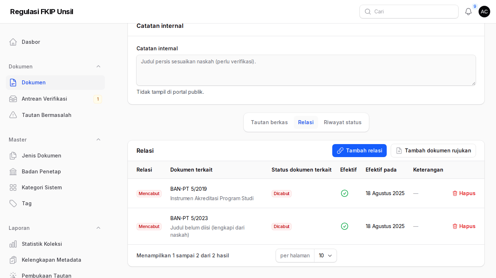
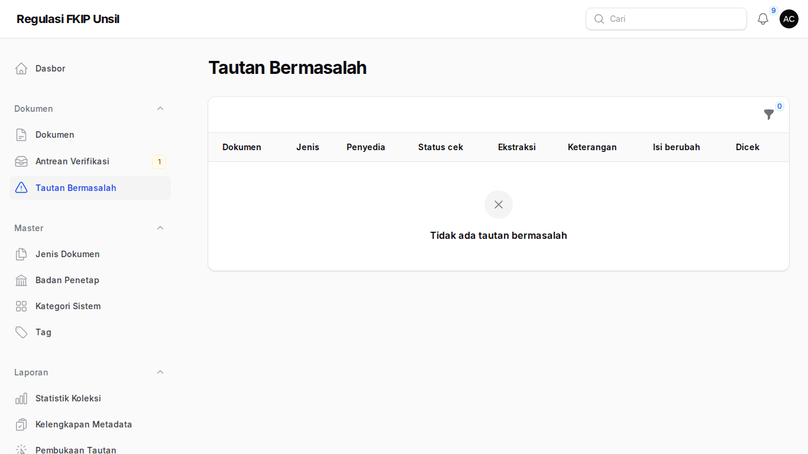
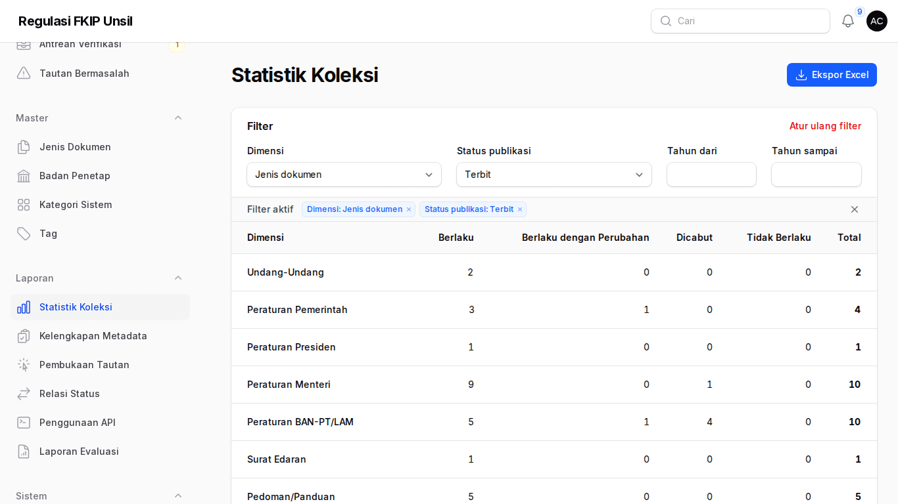
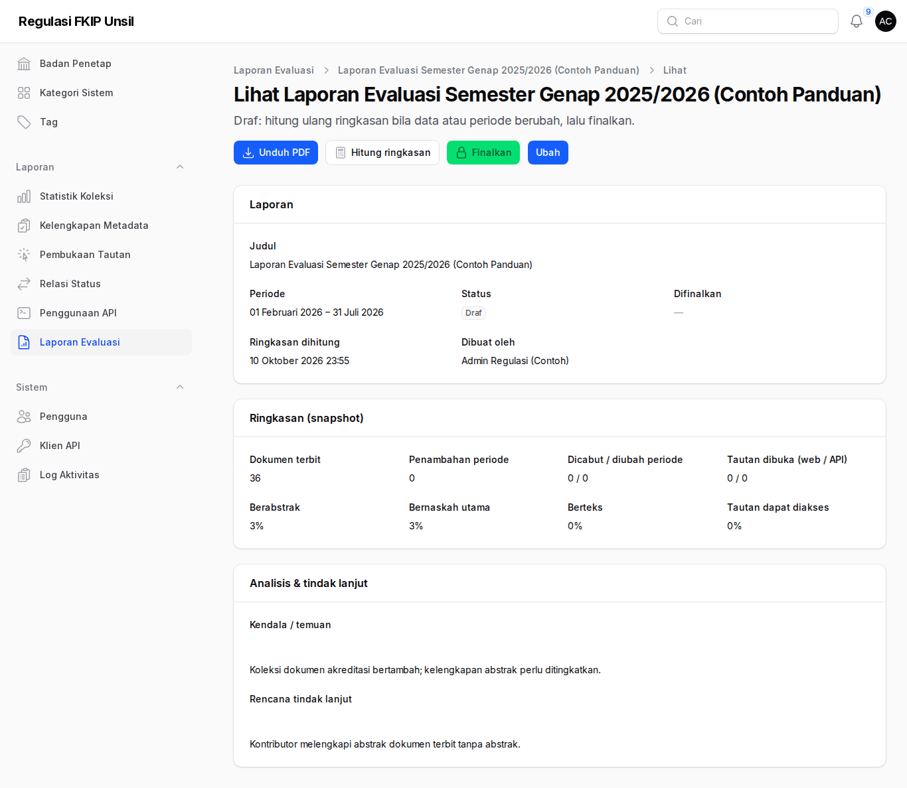
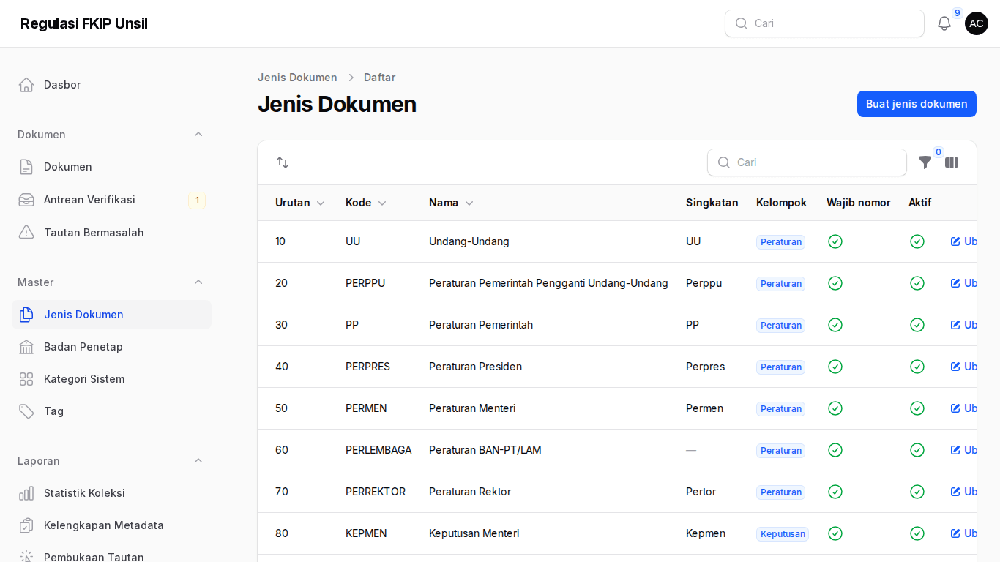

Panduan Admin Regulasi
Tujuan peran: menjaga mutu koleksi: memverifikasi dan menerbitkan dokumen, mencatat relasi status, menangani tautan bermasalah, mengelola master, dan menyusun laporan.
Cara masuk
Masuk di /regulasi/admin. MFA wajib: saat masuk pertama pindai kode QR dengan aplikasi autentikator dan simpan kode pemulihan.
Langkah
- Dasbor
Ringkasan koleksi, antrean verifikasi tertua, dokumen terpopuler, grafik per jenis/tahun.
Dasbor - Antrean verifikasi
Menu Antrean Verifikasi (badge = jumlah menunggu) dengan kolom kelengkapan x/y; aksi Terbitkan/Tolak per baris dan terbitkan massal.
Antrean verifikasi - Periksa lalu terbitkan/tolak
Panel Kelengkapan menunjukkan syarat terbit (BR-05). Buka naskah, cocokkan metadata, lalu Terbitkan atau Tolak (catatan wajib). Dokumen salah input diarsipkan, tidak dihapus.
Verifikasi dokumen - Relasi status
Tab Relasi: Tambah relasi (mencabut/mengubah/melaksanakan; cukup dari satu sisi) atau Tambah dokumen rujukan bila peraturan target belum ada. Status target dihitung otomatis; relasi bertanggal masa depan diterapkan penjadwal harian. Ubah status berlaku untuk status manual "Tidak berlaku".
Relasi dokumen - Tautan bermasalah
Tautan tidak dapat diakses, ekstraksi gagal/tanpa teks, atau isi berubah. Perbaiki berbagi di Drive, lalu Periksa ulang/Ekstrak ulang.
Tautan bermasalah - Laporan
Statistik koleksi, kelengkapan, pembukaan tautan, relasi status, penggunaan API; ekspor Excel dikirim lewat notifikasi.
Statistik koleksi - Laporan evaluasi
Buat laporan periode → Hitung ringkasan → isi analisis & tindak lanjut → Finalkan (terkunci) → Unduh PDF.
Laporan evaluasi - Master
Jenis dokumen (urutan = urutan filter publik), Badan Penetap (T.E.U.), Kategori Sistem, Tag. Penugasan kontributor: menu Pengguna → Atur penugasan.
Master jenis dokumen
Perintah artisan penting
| Perintah | Fungsi |
|---|---|
regulasi:terapkan-status --dry-run | Lihat relasi tertunda (terjadwal harian 00:15) |
regulasi:ekstraksi-ulang --gagal | Ulangi ekstraksi teks yang gagal |
berkas:periksa-tautan | Periksa keteraksesan semua tautan terbit (Senin 06:30) |
regulasi:bangun-kamus [--antre] | Bangun ulang kamus istilah pencarian (koreksi salah ketik & sinonim) |
regulasi:ringkasan-mingguan | Kirim ringkasan mingguan ke admin regulasi (Senin 07:30) |
berkas:bersihkan-tmp [--jam=24] | Hapus berkas sementara ekstraksi/ekspor (harian 00:45) |
regulasi:siapkan-uat | Data & akun UAT per peran (ditolak di produksi) |
Jalankan di container aplikasi, mis. docker compose --env-file .env.production -f docker-compose.prod.yml exec app php artisan …. Rincian relasi: docs/RELASI.md; operasional: docs/DEPLOY.md.
Profil & kata sandi
Buka menu pengguna (pojok kanan atas) → Profil. Anda dapat mengubah nama dan NIP/NIDN/NPM; surel adalah identitas masuk dan hanya diubah super-admin. Untuk ganti kata sandi, isi kata sandi baru, ulangi, lalu masukkan kata sandi saat ini. Kata sandi baru harus berbeda dari yang lama.
Setelah kata sandi diganti, perangkat lain yang sedang masuk dengan akun Anda otomatis keluar. Bila akun Anda ditandai wajib ganti kata sandi (mis. akun baru dengan sandi awal), setiap halaman mengarah ke Profil sampai kata sandi diganti.
Tanya-jawab
- Mengapa status target belum berubah?
- Sumber harus terbit dan tanggal efektifnya sudah tiba; bila belum, halaman target menampilkan "relasi tertunda".
- Relasi keliru?
- Hapus relasi (alasan wajib) lalu tambah yang benar; status dihitung ulang.
- Pencarian tidak toleran salah ketik?
- Meilisearch mati; portal memakai cadangan basis data. Hubungi TI fakultas.
Kontak
Admin Regulasi FKIP (regulasi-fkip@unsil.ac.id) · Admin TI Fakultas untuk akun & MFA